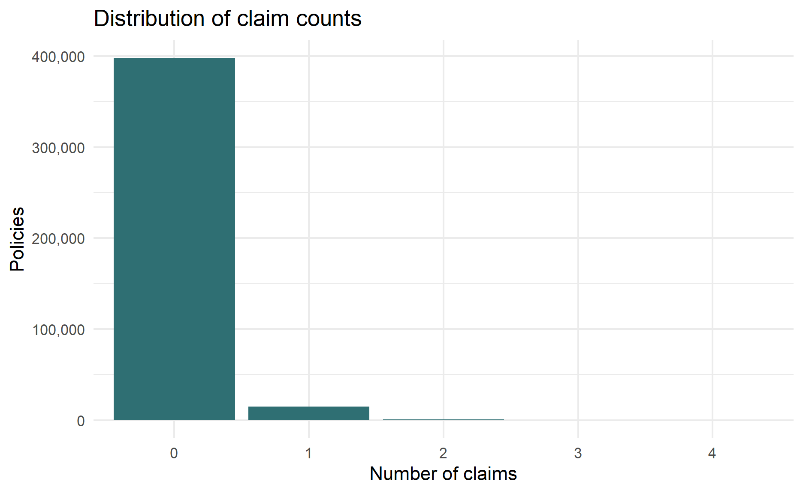
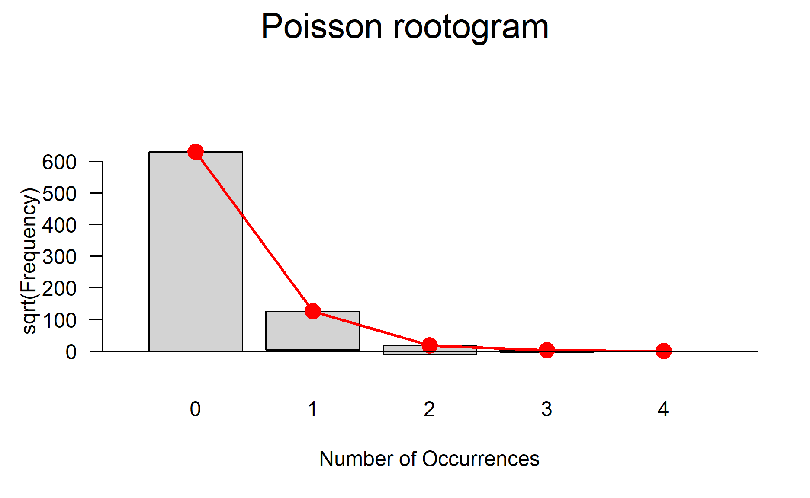
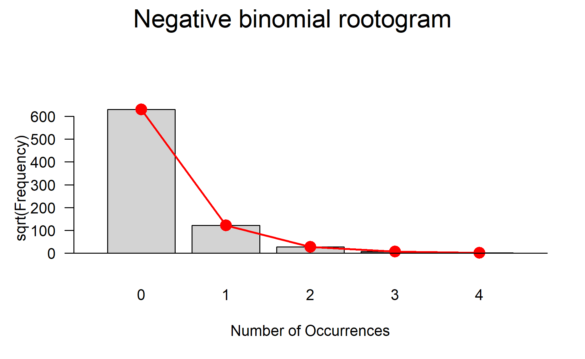
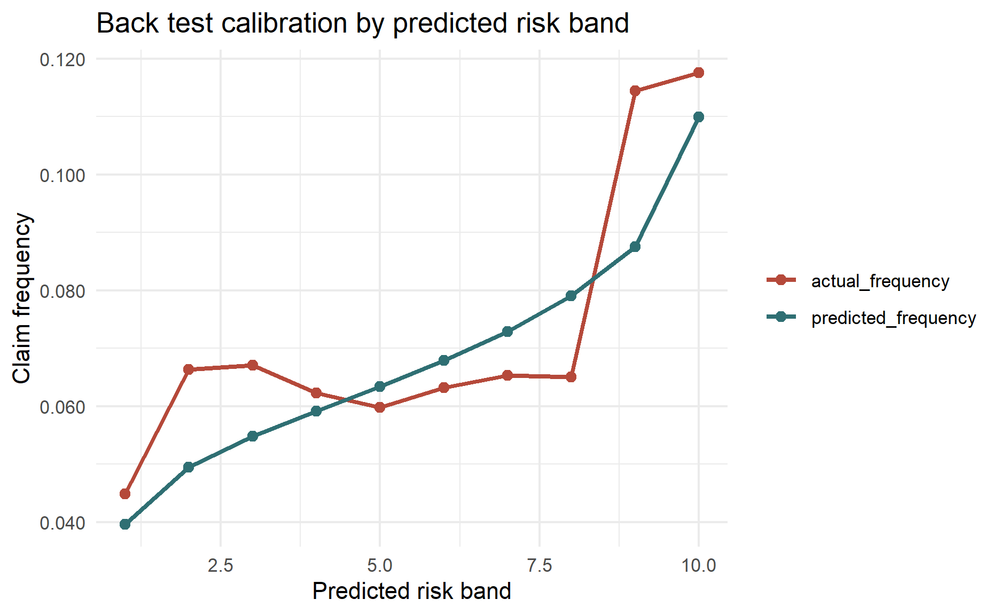
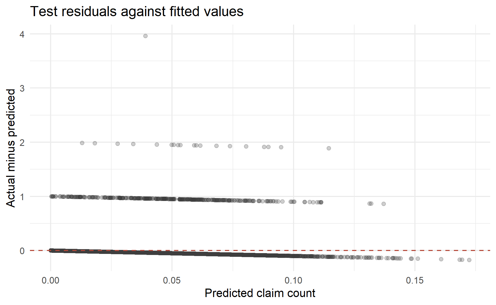

Photo by Immo Wegmann on Unsplash
Why Count Regression?
Count data appears whenever the target variable is a non-negative integer:
- number of insurance claims;
- number of customer complaints;
- number of hospital visits;
- number of defects in a production batch;
- number of transactions in a period.
Linear regression is usually a poor fit for these problems because it can predict negative values and assumes constant variance. Count outcomes are typically right-skewed, heteroskedastic, and bounded at zero. A count model handles these features directly.
This post focuses on negative binomial regression. We will use a local copy of the French motor third-party liability insurance frequency dataset and build a model that predicts the number of claims per policy, while adjusting for policy exposure.
Poisson vs Negative Binomial
Poisson Regression
Poisson regression is the usual starting point for count modelling. It assumes:
\[Y_i \sim Poisson(\mu_i)\]
with a log link:
\[log(\mu_i) = \beta_0 + \beta_1x_{i1} + ... + \beta_px_{ip}\]
The key Poisson assumption is:
\[E(Y_i) = Var(Y_i) = \mu_i\]
That equality is elegant, but in real data it is often too strict. If the variance is larger than the mean, the data is over-dispersed. Over-dispersion can make Poisson standard errors too small, which then makes p-values look more confident than they should.
Negative Binomial Regression
Negative binomial regression relaxes the Poisson mean-variance assumption:
\[Var(Y_i) = \mu_i + \frac{\mu_i^2}{\theta}\]
where theta is the dispersion parameter estimated by the model. A smaller theta means more over-dispersion. As theta gets very large, the negative binomial model becomes close to a Poisson model.
The model still uses the log link:
\[log(\mu_i) = \beta_0 + \beta_1x_{i1} + ... + \beta_px_{ip}\]
so the interpretation remains similar to Poisson regression: exponentiated coefficients are multiplicative effects on the expected count or rate.
Exposure and Offset
For claim counts, different policies may be observed for different lengths of time. A policy observed for one full year naturally has more opportunity to produce a claim than a policy observed for one month. We handle this using an offset:
\[log(\mu_i) = log(exposure_i) + \beta_0 + \beta_1x_{i1} + ... + \beta_px_{ip}\]
This converts the model into a claim frequency model. We model the expected number of claims while allowing exposure to scale the expected count.
Pros and Cons
Pros
- Handles over-dispersed count data better than Poisson regression.
- Keeps a familiar GLM structure and log-link interpretation.
- Predicts non-negative expected counts.
- Works naturally with exposure offsets for frequency modelling.
- Often strong as a transparent benchmark before trying more complex machine learning models.
Cons
- It models the conditional mean, not the exact observed count for each individual record.
- It does not automatically solve excess zeros. A zero-inflated or hurdle model may be better when there are more zeros than the negative binomial distribution can explain.
- Coefficients are multiplicative, which can be less intuitive at first than linear effects.
- Results can be sensitive to feature engineering, outliers, sparse factor levels, and exposure quality.
- It assumes independent observations unless the modelling structure is extended.
Practical Considerations
Before using negative binomial regression, check:
- Outcome type: the dependent variable should be a count: 0, 1, 2, 3, and so on.
- Exposure: if observations have different risk periods, include an offset such as
log(exposure). - Over-dispersion: compare the residual deviance to residual degrees of freedom, or run a formal check.
- Excess zeros: inspect zero inflation diagnostics.
- Factor levels: rare categories can create unstable estimates.
- Outliers and leverage: large fitted counts or unusual observations can dominate the model.
- Train/test split: evaluate performance on unseen data, not only the training data.
Modelling Dataset
We will use freMTPLfreq, a French motor third-party liability insurance frequency dataset. The outcome is claim_nb, the number of claims. The exposure variable is exposure. To make the post reproducible in Blogdown, the data is read from a CSV saved in this post folder instead of being loaded from an external R package at knit time.
data_path <- file.path("data", "freMTPLfreq.csv")
if (!file.exists(data_path)) {
stop("The modelling dataset is missing. Expected to find data/freMTPLfreq.csv in the post folder.")
}
df <-
readr::read_csv(data_path, show_col_types = FALSE) %>%
clean_names() %>%
mutate(
policy_id = as.character(policy_id),
claim_nb = as.integer(claim_nb),
across(c(power, brand, gas, region), as.factor)
) %>%
filter(exposure > 0)
glimpse(df)Rows: 413,169
Columns: 10
$ policy_id <chr> "1", "2", "3", "4", "5", "6", "7", "8", "9", "10"…
$ claim_nb <int> 0, 0, 0, 0, 0, 0, 0, 0, 0, 0, 0, 0, 0, 0, 0, 0, 0…
$ exposure <dbl> 0.09, 0.84, 0.52, 0.45, 0.15, 0.75, 0.81, 0.05, 0…
$ power <fct> g, g, f, f, g, g, d, d, d, i, f, f, e, e, e, e, e…
$ car_age <dbl> 0, 0, 2, 2, 0, 0, 1, 0, 9, 0, 2, 2, 0, 0, 0, 0, 0…
$ driver_age <dbl> 46, 46, 38, 38, 41, 41, 27, 27, 23, 44, 32, 32, 3…
$ brand <fct> "Japanese (except Nissan) or Korean", "Japanese (…
$ gas <fct> Diesel, Diesel, Regular, Regular, Diesel, Diesel,…
$ region <fct> Aquitaine, Aquitaine, Nord-Pas-de-Calais, Nord-Pa…
$ density <dbl> 76, 76, 3003, 3003, 60, 60, 695, 695, 7887, 27000…The dataset contains one row per policy record. The target variable, claim_nb, is a non-negative count, while exposure represents the amount of time the policy was exposed to risk. This makes the dataset a natural candidate for claim frequency modelling with an exposure offset.
df %>%
summarise(
n = n(),
total_claims = sum(claim_nb),
mean_claim_count = mean(claim_nb),
variance_claim_count = var(claim_nb),
share_zero_claim = mean(claim_nb == 0),
total_exposure = sum(exposure),
claim_frequency = sum(claim_nb) / sum(exposure)
) %>%
kable(digits = 4)| n | total_claims | mean_claim_count | variance_claim_count | share_zero_claim | total_exposure | claim_frequency |
|---|---|---|---|---|---|---|
| 413169 | 16181 | 0.0392 | 0.0416 | 0.9628 | 231824.2 | 0.0698 |
The portfolio contains 413,169 policy records and 16,181 claims. The average claim count per policy is low at 0.0392, and 96.3% of policies have no claims. This confirms that the data is sparse, which is common in insurance frequency modelling.
df %>%
count(claim_nb) %>%
mutate(share = n / sum(n)) %>%
kable(digits = 4)| claim_nb | n | share |
|---|---|---|
| 0 | 397779 | 0.9628 |
| 1 | 14633 | 0.0354 |
| 2 | 726 | 0.0018 |
| 3 | 28 | 0.0001 |
| 4 | 3 | 0.0000 |
The count table shows that most observations are zeros, with progressively fewer policies recording one, two, or more claims. This pattern is expected for claim frequency data: the individual outcome is usually zero, but the aggregate claim count is still meaningful across a portfolio.
df %>%
mutate(claim_nb_group = if_else(claim_nb >= 5, "5+", as.character(claim_nb))) %>%
count(claim_nb_group) %>%
mutate(claim_nb_group = factor(claim_nb_group, levels = c("0", "1", "2", "3", "4", "5+"))) %>%
ggplot(aes(claim_nb_group, n)) +
geom_col(fill = "#2f6f73") +
scale_y_continuous(labels = comma) +
labs(
title = "Distribution of claim counts",
x = "Number of claims",
y = "Policies"
) +
theme_minimal()
The bar chart reinforces the sparsity observed in the table. A standard linear regression would be poorly suited to this shape because it would not respect the non-negative and highly skewed nature of the outcome.
Distribution Diagnostics
The first quick check is whether the variance is materially larger than the mean. If it is, Poisson regression may be too restrictive.
df %>%
summarise(
mean_claim_nb = mean(claim_nb),
variance_claim_nb = var(claim_nb),
variance_to_mean_ratio = variance_claim_nb / mean_claim_nb
) %>%
kable(digits = 4)| mean_claim_nb | variance_claim_nb | variance_to_mean_ratio |
|---|---|---|
| 0.0392 | 0.0416 | 1.0632 |
The variance-to-mean ratio is 1.063. At the raw outcome level, this is only modestly above 1, but the more important check is conditional over-dispersion after accounting for predictors and exposure. We therefore still fit a Poisson benchmark before deciding whether negative binomial regression is warranted.
We can also compare distribution-level goodness-of-fit using rootograms.
goodfit_poisson <- goodfit(df$claim_nb, type = "poisson")
goodfit_negbin <- goodfit(df$claim_nb, type = "nbinomial")
summary(goodfit_poisson)
Goodness-of-fit test for poisson distribution
X^2 df P(> X^2)
Likelihood Ratio 556.3791 3 2.878853e-120summary(goodfit_negbin)
Goodness-of-fit test for nbinomial distribution
X^2 df P(> X^2)
Likelihood Ratio 3.525575 2 0.171566The distribution-level goodness-of-fit test rejects the Poisson distribution but does not reject the negative binomial distribution at conventional significance levels. This is early evidence that the negative binomial distribution captures the marginal claim count distribution more effectively than the Poisson distribution.
rootogram(goodfit_poisson, main = "Poisson rootogram")
In the Poisson rootogram, larger deviations from the horizontal reference line indicate that the fitted Poisson distribution is not matching the observed count frequencies well. The visible mismatch is consistent with the formal goodness-of-fit result.
rootogram(goodfit_negbin, main = "Negative binomial rootogram")
The negative binomial rootogram should sit closer to the reference line. This does not prove that the final regression model is correct, but it supports using negative binomial regression as a serious candidate model.
Train, Validation, and Test Split
To make model comparison more honest, we split the data into:
- training data for fitting model parameters;
- validation data for selecting the model specification;
- testing data for final back testing.
This dataset does not contain a policy start date suitable for a true time-based back test, so the example uses a reproducible random holdout. In a production time-series or pricing workflow, use a chronological split whenever possible.
The full dataset is large enough that repeated negative binomial fits can take a while on a laptop. To keep the blog post runnable, the modelling section uses a reproducible sample from the same dataset. For production modelling, fit the final specification on the full training dataset once the workflow is settled.
model_n <- min(50000, nrow(df))
df_model <-
df %>%
slice_sample(n = model_n)
df_split <-
df_model %>%
mutate(split_id = runif(n()))
train_df <- df_split %>% filter(split_id <= 0.60) %>% dplyr::select(-split_id)
valid_df <- df_split %>% filter(split_id > 0.60, split_id <= 0.80) %>% dplyr::select(-split_id)
test_df <- df_split %>% filter(split_id > 0.80) %>% dplyr::select(-split_id)
tibble(
dataset = c("train", "validation", "test"),
rows = c(nrow(train_df), nrow(valid_df), nrow(test_df)),
exposure = c(sum(train_df$exposure), sum(valid_df$exposure), sum(test_df$exposure)),
claims = c(sum(train_df$claim_nb), sum(valid_df$claim_nb), sum(test_df$claim_nb))
) %>%
mutate(claim_frequency = claims / exposure) %>%
kable(digits = 4)| dataset | rows | exposure | claims | claim_frequency |
|---|---|---|---|---|
| train | 30015 | 16820.613 | 1104 | 0.0656 |
| validation | 10008 | 5557.546 | 365 | 0.0657 |
| test | 9977 | 5654.201 | 399 | 0.0706 |
The split keeps the exposure and claim frequency reasonably similar across training, validation, and test samples. This is important because a materially different test portfolio could make model comparison difficult to interpret.
Baseline Models
The baseline model uses the same predictors across Poisson, quasi-Poisson, and negative binomial regression:
Poisson Regression
poisson_fit <- glm(
formula = base_formula,
family = poisson(link = "log"),
data = train_df
)
summary(poisson_fit)
Call:
glm(formula = base_formula, family = poisson(link = "log"), data = train_df)
Coefficients:
Estimate Std. Error z value
(Intercept) -2.171e+00 2.268e-01 -9.572
powere 1.184e-01 1.076e-01 1.101
powerf -1.986e-03 1.071e-01 -0.019
powerg 1.203e-01 1.039e-01 1.158
powerh 8.842e-03 1.530e-01 0.058
poweri 4.999e-01 1.508e-01 3.315
powerj 2.094e-01 1.677e-01 1.249
powerk 3.409e-01 2.148e-01 1.587
powerl 1.706e-02 3.513e-01 0.049
powerm -7.969e-01 7.194e-01 -1.108
powern -3.764e-01 7.147e-01 -0.527
powero 4.282e-01 4.584e-01 0.934
car_age -1.362e-02 6.024e-03 -2.262
driver_age -9.761e-03 2.187e-03 -4.462
brandJapanese (except Nissan) or Korean -3.382e-01 1.813e-01 -1.865
brandMercedes, Chrysler or BMW 2.009e-01 2.029e-01 0.990
brandOpel, General Motors or Ford 1.483e-01 1.762e-01 0.842
brandother 1.784e-01 2.333e-01 0.765
brandRenault, Nissan or Citroen 3.338e-02 1.556e-01 0.214
brandVolkswagen, Audi, Skoda or Seat 1.137e-01 1.803e-01 0.631
gasRegular -9.350e-02 6.572e-02 -1.423
regionBasse-Normandie -4.036e-01 2.358e-01 -1.711
regionBretagne -2.162e-01 1.501e-01 -1.440
regionCentre -1.441e-01 1.280e-01 -1.126
regionHaute-Normandie -4.894e-02 2.763e-01 -0.177
regionIle-de-France 8.859e-02 1.542e-01 0.575
regionLimousin 4.158e-01 2.766e-01 1.503
regionNord-Pas-de-Calais 4.020e-02 1.732e-01 0.232
regionPays-de-la-Loire 5.191e-02 1.501e-01 0.346
regionPoitou-Charentes -4.006e-02 1.793e-01 -0.223
density 1.052e-05 7.590e-06 1.386
Pr(>|z|)
(Intercept) < 2e-16 ***
powere 0.271050
powerf 0.985204
powerg 0.246988
powerh 0.953921
poweri 0.000915 ***
powerj 0.211748
powerk 0.112452
powerl 0.961270
powerm 0.267960
powern 0.598419
powero 0.350178
car_age 0.023711 *
driver_age 8.11e-06 ***
brandJapanese (except Nissan) or Korean 0.062180 .
brandMercedes, Chrysler or BMW 0.322022
brandOpel, General Motors or Ford 0.399935
brandother 0.444564
brandRenault, Nissan or Citroen 0.830207
brandVolkswagen, Audi, Skoda or Seat 0.528293
gasRegular 0.154825
regionBasse-Normandie 0.087022 .
regionBretagne 0.149820
regionCentre 0.260355
regionHaute-Normandie 0.859399
regionIle-de-France 0.565488
regionLimousin 0.132712
regionNord-Pas-de-Calais 0.816427
regionPays-de-la-Loire 0.729529
regionPoitou-Charentes 0.823210
density 0.165774
---
Signif. codes: 0 '***' 0.001 '**' 0.01 '*' 0.05 '.' 0.1 ' ' 1
(Dispersion parameter for poisson family taken to be 1)
Null deviance: 7386.3 on 30014 degrees of freedom
Residual deviance: 7299.8 on 29984 degrees of freedom
AIC: 9497
Number of Fisher Scoring iterations: 6The Poisson model provides a transparent baseline. The coefficients are on the log scale, so their exponentiated values represent multiplicative effects on expected claim frequency. However, the coefficient table should not be interpreted in isolation until we check whether the Poisson variance assumption is reasonable.
check_overdispersion(poisson_fit)# Overdispersion test
dispersion ratio = 1.802
Pearson's Chi-Squared = 54016.301
p-value = < 0.001The dispersion ratio is above 1 and the over-dispersion test is statistically significant. This means the observed variability is larger than the Poisson model expects, so the Poisson standard errors are likely to be too optimistic.
Quasi-Poisson Regression
Quasi-Poisson regression keeps the Poisson mean function but inflates the standard errors to account for over-dispersion. It is useful for inference, but it does not provide a full likelihood, so it is less convenient for likelihood-based model comparison.
quasi_fit <- glm(
formula = base_formula,
family = quasipoisson(link = "log"),
data = train_df
)
summary(quasi_fit)
Call:
glm(formula = base_formula, family = quasipoisson(link = "log"),
data = train_df)
Coefficients:
Estimate Std. Error t value
(Intercept) -2.171e+00 3.044e-01 -7.132
powere 1.184e-01 1.444e-01 0.820
powerf -1.986e-03 1.438e-01 -0.014
powerg 1.203e-01 1.395e-01 0.863
powerh 8.842e-03 2.054e-01 0.043
poweri 4.999e-01 2.024e-01 2.470
powerj 2.094e-01 2.251e-01 0.930
powerk 3.409e-01 2.883e-01 1.183
powerl 1.706e-02 4.715e-01 0.036
powerm -7.969e-01 9.656e-01 -0.825
powern -3.764e-01 9.592e-01 -0.392
powero 4.282e-01 6.152e-01 0.696
car_age -1.362e-02 8.086e-03 -1.685
driver_age -9.761e-03 2.936e-03 -3.324
brandJapanese (except Nissan) or Korean -3.382e-01 2.434e-01 -1.389
brandMercedes, Chrysler or BMW 2.009e-01 2.723e-01 0.738
brandOpel, General Motors or Ford 1.483e-01 2.365e-01 0.627
brandother 1.784e-01 3.132e-01 0.570
brandRenault, Nissan or Citroen 3.338e-02 2.089e-01 0.160
brandVolkswagen, Audi, Skoda or Seat 1.137e-01 2.420e-01 0.470
gasRegular -9.350e-02 8.821e-02 -1.060
regionBasse-Normandie -4.036e-01 3.166e-01 -1.275
regionBretagne -2.162e-01 2.015e-01 -1.073
regionCentre -1.441e-01 1.718e-01 -0.839
regionHaute-Normandie -4.894e-02 3.708e-01 -0.132
regionIle-de-France 8.859e-02 2.069e-01 0.428
regionLimousin 4.158e-01 3.712e-01 1.120
regionNord-Pas-de-Calais 4.020e-02 2.324e-01 0.173
regionPays-de-la-Loire 5.191e-02 2.015e-01 0.258
regionPoitou-Charentes -4.006e-02 2.406e-01 -0.166
density 1.052e-05 1.019e-05 1.033
Pr(>|t|)
(Intercept) 1.01e-12 ***
powere 0.412220
powerf 0.988977
powerg 0.388416
powerh 0.965662
poweri 0.013515 *
powerj 0.352192
powerk 0.237000
powerl 0.971141
powerm 0.409202
powern 0.694778
powero 0.486416
car_age 0.091987 .
driver_age 0.000887 ***
brandJapanese (except Nissan) or Korean 0.164702
brandMercedes, Chrysler or BMW 0.460641
brandOpel, General Motors or Ford 0.530592
brandother 0.568971
brandRenault, Nissan or Citroen 0.873072
brandVolkswagen, Audi, Skoda or Seat 0.638487
gasRegular 0.289183
regionBasse-Normandie 0.202332
regionBretagne 0.283302
regionCentre 0.401725
regionHaute-Normandie 0.895007
regionIle-de-France 0.668531
regionLimousin 0.262667
regionNord-Pas-de-Calais 0.862691
regionPays-de-la-Loire 0.796724
regionPoitou-Charentes 0.867803
density 0.301832
---
Signif. codes: 0 '***' 0.001 '**' 0.01 '*' 0.05 '.' 0.1 ' ' 1
(Dispersion parameter for quasipoisson family taken to be 1.80163)
Null deviance: 7386.3 on 30014 degrees of freedom
Residual deviance: 7299.8 on 29984 degrees of freedom
AIC: NA
Number of Fisher Scoring iterations: 6The quasi-Poisson model adjusts the standard errors for over-dispersion while keeping the same mean structure as the Poisson model. This is useful when the main goal is inference on the average claim frequency, but it does not provide a likelihood-based predictive distribution for log-loss comparison.
Negative Binomial Regression
nb_fit <- glm.nb(
formula = base_formula,
data = train_df
)
summary(nb_fit)
Call:
glm.nb(formula = base_formula, data = train_df, init.theta = 0.7289427548,
link = log)
Coefficients:
Estimate Std. Error z value
(Intercept) -2.172e+00 2.342e-01 -9.271
powere 1.286e-01 1.109e-01 1.160
powerf -1.021e-04 1.104e-01 -0.001
powerg 1.221e-01 1.072e-01 1.138
powerh 1.989e-02 1.573e-01 0.126
poweri 5.089e-01 1.569e-01 3.243
powerj 2.194e-01 1.729e-01 1.269
powerk 3.475e-01 2.229e-01 1.559
powerl 4.101e-02 3.592e-01 0.114
powerm -8.076e-01 7.342e-01 -1.100
powern -3.929e-01 7.345e-01 -0.535
powero 4.698e-01 4.713e-01 0.997
car_age -1.331e-02 6.203e-03 -2.146
driver_age -9.854e-03 2.254e-03 -4.372
brandJapanese (except Nissan) or Korean -3.450e-01 1.869e-01 -1.846
brandMercedes, Chrysler or BMW 2.013e-01 2.103e-01 0.957
brandOpel, General Motors or Ford 1.520e-01 1.821e-01 0.835
brandother 1.810e-01 2.418e-01 0.748
brandRenault, Nissan or Citroen 3.554e-02 1.607e-01 0.221
brandVolkswagen, Audi, Skoda or Seat 1.093e-01 1.865e-01 0.586
gasRegular -9.228e-02 6.786e-02 -1.360
regionBasse-Normandie -3.955e-01 2.419e-01 -1.635
regionBretagne -2.144e-01 1.552e-01 -1.381
regionCentre -1.397e-01 1.324e-01 -1.055
regionHaute-Normandie -3.322e-02 2.836e-01 -0.117
regionIle-de-France 9.378e-02 1.594e-01 0.588
regionLimousin 4.163e-01 2.898e-01 1.437
regionNord-Pas-de-Calais 4.696e-02 1.789e-01 0.262
regionPays-de-la-Loire 6.158e-02 1.554e-01 0.396
regionPoitou-Charentes -2.822e-02 1.852e-01 -0.152
density 1.067e-05 7.888e-06 1.353
Pr(>|z|)
(Intercept) < 2e-16 ***
powere 0.24618
powerf 0.99926
powerg 0.25492
powerh 0.89935
poweri 0.00118 **
powerj 0.20442
powerk 0.11903
powerl 0.90910
powerm 0.27135
powern 0.59271
powero 0.31888
car_age 0.03186 *
driver_age 1.23e-05 ***
brandJapanese (except Nissan) or Korean 0.06496 .
brandMercedes, Chrysler or BMW 0.33837
brandOpel, General Motors or Ford 0.40379
brandother 0.45417
brandRenault, Nissan or Citroen 0.82501
brandVolkswagen, Audi, Skoda or Seat 0.55776
gasRegular 0.17393
regionBasse-Normandie 0.10204
regionBretagne 0.16720
regionCentre 0.29145
regionHaute-Normandie 0.90675
regionIle-de-France 0.55637
regionLimousin 0.15081
regionNord-Pas-de-Calais 0.79295
regionPays-de-la-Loire 0.69186
regionPoitou-Charentes 0.87885
density 0.17619
---
Signif. codes: 0 '***' 0.001 '**' 0.01 '*' 0.05 '.' 0.1 ' ' 1
(Dispersion parameter for Negative Binomial(0.7289) family taken to be 1)
Null deviance: 6289.3 on 30014 degrees of freedom
Residual deviance: 6206.8 on 29984 degrees of freedom
AIC: 9468.8
Number of Fisher Scoring iterations: 1
Theta: 0.729
Std. Err.: 0.177
2 x log-likelihood: -9404.832 The negative binomial model estimates the mean structure and the dispersion parameter jointly. Compared with Poisson regression, this gives the model more flexibility to account for extra variation in claim counts.
The fitted theta is:
nb_fit$theta[1] 0.7289428The estimated theta is 0.729. Since this is finite rather than extremely large, the model is allowing for meaningful over-dispersion. If theta were very large, the fitted model would behave more like a Poisson regression.
Statistical Tests and Diagnostics
Test for Over-Dispersion
The most important diagnostic is whether the Poisson model is over-dispersed.
model_performance(poisson_fit)# Indices of model performance
AIC | AICc | BIC | Nagelkerke's R2 | RMSE | Sigma
----------------------------------------------------------
9497.0 | 9497.1 | 9754.6 | 0.013 | 0.197 | 1
AIC | Score_log | Score_spherical
------------------------------------
9497.0 | -0.157 | 0.006check_overdispersion(poisson_fit)# Overdispersion test
dispersion ratio = 1.802
Pearson's Chi-Squared = 54016.301
p-value = < 0.001The diagnostic confirms that the Poisson benchmark is over-dispersed after conditioning on the predictors and exposure. This is the key reason to move beyond Poisson regression for this dataset.
Likelihood Ratio Comparison
Poisson regression is nested inside the negative binomial model as theta approaches infinity. A likelihood ratio comparison is commonly used as evidence that the negative binomial model improves the fit, although the boundary condition means the p-value should be interpreted as an approximation.
lmtest::lrtest(poisson_fit, nb_fit)Likelihood ratio test
Model 1: claim_nb ~ power + car_age + driver_age + brand + gas + region +
density + offset(log(exposure))
Model 2: claim_nb ~ power + car_age + driver_age + brand + gas + region +
density + offset(log(exposure))
#Df LogLik Df Chisq Pr(>Chisq)
1 31 -4717.5
2 32 -4702.4 1 30.18 3.938e-08 ***
---
Signif. codes: 0 '***' 0.001 '**' 0.01 '*' 0.05 '.' 0.1 ' ' 1The likelihood ratio test strongly favours the negative binomial model over the Poisson model. In practical terms, estimating the additional dispersion parameter improves model fit enough to justify the added complexity.
Zero Inflation
Negative binomial regression can handle over-dispersion, but it is not automatically a zero-inflated model. If there are too many zeros even after accounting for predictors, consider zero-inflated negative binomial or hurdle models.
check_zeroinflation(nb_fit)# Check for zero-inflation
Observed zeros: 28963
Predicted zeros: 28971
Ratio: 1.00The observed and predicted number of zeros are very similar, so there is no strong evidence that a zero-inflated model is required at this stage. This is a useful distinction: the data has many zeros, but the negative binomial model appears able to explain them without adding a separate zero-generating process.
Multicollinearity
check_collinearity(nb_fit)# Check for Multicollinearity
Low Correlation
Term VIF VIF 95% CI adj. VIF Tolerance Tolerance 95% CI
power 1.47 [1.45, 1.50] 1.02 0.68 [0.67, 0.69]
car_age 1.19 [1.17, 1.21] 1.09 0.84 [0.83, 0.85]
driver_age 1.03 [1.02, 1.05] 1.02 0.97 [0.95, 0.98]
brand 1.67 [1.64, 1.70] 1.04 0.60 [0.59, 0.61]
gas 1.19 [1.18, 1.21] 1.09 0.84 [0.83, 0.85]
region 1.88 [1.85, 1.91] 1.04 0.53 [0.52, 0.54]
density 1.63 [1.60, 1.66] 1.28 0.61 [0.60, 0.62]The variance inflation factors are low, which suggests that multicollinearity is not a major concern for this specification. This makes the coefficient estimates easier to interpret and reduces the risk that standard errors are inflated by redundant predictors.
Influential Observations
check_outliers(nb_fit)OK: No outliers detected.
- Based on the following method and threshold: cook (0.9).
- For variable: (Whole model)The outlier diagnostic does not flag influential observations under the selected threshold. This does not remove the need for business review of extreme policies, but it suggests that the fitted model is not being dominated by a small number of unusual records.
Tuning the Negative Binomial Model
For negative binomial GLMs, tuning usually means:
- choosing predictors and interactions;
- transforming skewed variables;
- grouping sparse factor levels;
- deciding whether to include an offset;
- comparing candidate models on validation data;
- checking whether the estimated dispersion remains sensible.
Here we compare a baseline model with a slightly expanded model that adds an interaction between car age and driver age.
nb_fit_base <- glm.nb(base_formula, data = train_df)
nb_fit_expanded <- glm.nb(expanded_formula, data = train_df)
AIC(nb_fit_base, nb_fit_expanded) df AIC
nb_fit_base 32 9468.832
nb_fit_expanded 33 9469.503The expanded model adds one interaction term. In this run, its AIC is very close to the base model’s AIC, so there is limited in-sample evidence that the interaction materially improves fit. The final choice should therefore be guided by validation performance and interpretability, not AIC alone.
The best model by AIC is not always the best model on unseen data, so we also compare validation performance.
poisson_log_loss_vec <- function(actual, predicted_mu) {
-mean(dpois(x = actual, lambda = predicted_mu, log = TRUE))
}
nb_log_loss_vec <- function(actual, predicted_mu, theta) {
-mean(dnbinom(x = actual, mu = predicted_mu, size = theta, log = TRUE))
}
evaluate_count_model <- function(model, data, model_type = c("poisson", "nb")) {
model_type <- match.arg(model_type)
pred_mu <- predict(model, newdata = data, type = "response")
if (model_type == "nb") {
log_loss <- nb_log_loss_vec(data$claim_nb, pred_mu, model$theta)
} else {
log_loss <- poisson_log_loss_vec(data$claim_nb, pred_mu)
}
tibble(
rmse = sqrt(mean((data$claim_nb - pred_mu)^2)),
mae = mean(abs(data$claim_nb - pred_mu)),
mean_actual = mean(data$claim_nb),
mean_predicted = mean(pred_mu),
total_actual = sum(data$claim_nb),
total_predicted = sum(pred_mu),
actual_frequency = sum(data$claim_nb) / sum(data$exposure),
predicted_frequency = sum(pred_mu) / sum(data$exposure),
log_loss = log_loss
)
}validation_results <-
bind_rows(
evaluate_count_model(poisson_fit, valid_df, "poisson") %>%
mutate(model = "Poisson"),
evaluate_count_model(nb_fit_base, valid_df, "nb") %>%
mutate(model = "Negative binomial - base"),
evaluate_count_model(nb_fit_expanded, valid_df, "nb") %>%
mutate(model = "Negative binomial - expanded")
) %>%
relocate(model)
validation_results %>%
kable(digits = 4)| model | rmse | mae | mean_actual | mean_predicted | total_actual | total_predicted | actual_frequency | predicted_frequency | log_loss |
|---|---|---|---|---|---|---|---|---|---|
| Poisson | 0.1948 | 0.0694 | 0.0365 | 0.0363 | 365 | 363.5031 | 0.0657 | 0.0654 | 0.1536 |
| Negative binomial - base | 0.1948 | 0.0697 | 0.0365 | 0.0367 | 365 | 366.8252 | 0.0657 | 0.0660 | 0.1533 |
| Negative binomial - expanded | 0.1947 | 0.0697 | 0.0365 | 0.0367 | 365 | 366.9710 | 0.0657 | 0.0660 | 0.1532 |
The validation results show that all models produce similar RMSE and MAE, which is common in sparse count problems where most individual observations are zero. The more relevant metric here is log loss because it evaluates the full predictive count distribution. On that basis, the negative binomial models perform slightly better than the Poisson benchmark.
best_nb_model_name <-
validation_results %>%
filter(str_detect(model, "Negative binomial")) %>%
arrange(log_loss) %>%
slice(1) %>%
pull(model)
best_nb_model_name[1] "Negative binomial - expanded"Among the negative binomial candidates, the validation step selects Negative binomial - expanded. The improvement is small, so this should be viewed as a modest tuning decision rather than strong evidence of a substantially better specification.
For illustration, we continue with the validation winner:
final_nb_fit <-
if (best_nb_model_name == "Negative binomial - expanded") {
nb_fit_expanded
} else {
nb_fit_base
}
summary(final_nb_fit)
Call:
glm.nb(formula = expanded_formula, data = train_df, init.theta = 0.7290092638,
link = log)
Coefficients:
Estimate Std. Error z value
(Intercept) -2.339e+00 2.755e-01 -8.492
powere 1.274e-01 1.108e-01 1.149
powerf -1.181e-03 1.104e-01 -0.011
powerg 1.206e-01 1.072e-01 1.125
powerh 1.737e-02 1.573e-01 0.110
poweri 5.058e-01 1.569e-01 3.223
powerj 2.173e-01 1.728e-01 1.257
powerk 3.503e-01 2.228e-01 1.572
powerl 4.323e-02 3.592e-01 0.120
powerm -8.076e-01 7.344e-01 -1.100
powern -3.974e-01 7.346e-01 -0.541
powero 4.669e-01 4.713e-01 0.991
car_age 8.434e-03 1.969e-02 0.428
driver_age -6.151e-03 3.899e-03 -1.577
brandJapanese (except Nissan) or Korean -3.458e-01 1.869e-01 -1.850
brandMercedes, Chrysler or BMW 1.988e-01 2.103e-01 0.945
brandOpel, General Motors or Ford 1.511e-01 1.821e-01 0.830
brandother 1.779e-01 2.418e-01 0.736
brandRenault, Nissan or Citroen 3.363e-02 1.607e-01 0.209
brandVolkswagen, Audi, Skoda or Seat 1.102e-01 1.865e-01 0.591
gasRegular -9.554e-02 6.788e-02 -1.407
regionBasse-Normandie -3.960e-01 2.418e-01 -1.637
regionBretagne -2.130e-01 1.552e-01 -1.372
regionCentre -1.400e-01 1.324e-01 -1.057
regionHaute-Normandie -3.266e-02 2.836e-01 -0.115
regionIle-de-France 9.803e-02 1.594e-01 0.615
regionLimousin 4.151e-01 2.897e-01 1.433
regionNord-Pas-de-Calais 4.975e-02 1.789e-01 0.278
regionPays-de-la-Loire 5.976e-02 1.554e-01 0.385
regionPoitou-Charentes -3.003e-02 1.851e-01 -0.162
density 1.060e-05 7.886e-06 1.345
car_age:driver_age -4.735e-04 4.105e-04 -1.153
Pr(>|z|)
(Intercept) < 2e-16 ***
powere 0.25059
powerf 0.99146
powerg 0.26077
powerh 0.91207
poweri 0.00127 **
powerj 0.20871
powerk 0.11598
powerl 0.90420
powerm 0.27150
powern 0.58848
powero 0.32189
car_age 0.66843
driver_age 0.11469
brandJapanese (except Nissan) or Korean 0.06431 .
brandMercedes, Chrysler or BMW 0.34446
brandOpel, General Motors or Ford 0.40661
brandother 0.46198
brandRenault, Nissan or Citroen 0.83426
brandVolkswagen, Audi, Skoda or Seat 0.55446
gasRegular 0.15931
regionBasse-Normandie 0.10156
regionBretagne 0.16994
regionCentre 0.29036
regionHaute-Normandie 0.90833
regionIle-de-France 0.53859
regionLimousin 0.15183
regionNord-Pas-de-Calais 0.78098
regionPays-de-la-Loire 0.70054
regionPoitou-Charentes 0.87112
density 0.17871
car_age:driver_age 0.24874
---
Signif. codes: 0 '***' 0.001 '**' 0.01 '*' 0.05 '.' 0.1 ' ' 1
(Dispersion parameter for Negative Binomial(0.729) family taken to be 1)
Null deviance: 6289.3 on 30014 degrees of freedom
Residual deviance: 6205.6 on 29983 degrees of freedom
AIC: 9469.5
Number of Fisher Scoring iterations: 1
Theta: 0.729
Std. Err.: 0.177
2 x log-likelihood: -9403.503 The final model summary is the specification selected from the validation process. Statistical significance should be interpreted alongside effect size, business plausibility, and stability across samples, especially because sparse claim data can make some factor-level estimates noisy.
Interpreting the Results
Because the model uses a log link, each coefficient is on the log scale. Exponentiating the coefficients converts them into multiplicative effects on expected claim count, holding other variables constant.
final_nb_fit %>%
tidy(conf.int = TRUE) %>%
mutate(
rate_ratio = exp(estimate),
conf.low = exp(conf.low),
conf.high = exp(conf.high)
) %>%
dplyr::select(term, estimate, rate_ratio, conf.low, conf.high, p.value) %>%
arrange(p.value) %>%
kable(digits = 4)| term | estimate | rate_ratio | conf.low | conf.high | p.value |
|---|---|---|---|---|---|
| (Intercept) | -2.3392 | 0.0964 | 0.0558 | 0.1648 | 0.0000 |
| poweri | 0.5058 | 1.6583 | 1.2103 | 2.2481 | 0.0013 |
| brandJapanese (except Nissan) or Korean | -0.3458 | 0.7076 | 0.4937 | 1.0302 | 0.0643 |
| regionBasse-Normandie | -0.3960 | 0.6730 | 0.4102 | 1.0676 | 0.1016 |
| driver_age | -0.0062 | 0.9939 | 0.9862 | 1.0015 | 0.1147 |
| powerk | 0.3503 | 1.4194 | 0.8972 | 2.1641 | 0.1160 |
| regionLimousin | 0.4151 | 1.5146 | 0.8307 | 2.6094 | 0.1518 |
| gasRegular | -0.0955 | 0.9089 | 0.7952 | 1.0385 | 0.1593 |
| regionBretagne | -0.2130 | 0.8082 | 0.5974 | 1.0999 | 0.1699 |
| density | 0.0000 | 1.0000 | 1.0000 | 1.0000 | 0.1787 |
| powerj | 0.2173 | 1.2427 | 0.8765 | 1.7338 | 0.2087 |
| car_age:driver_age | -0.0005 | 0.9995 | 0.9987 | 1.0003 | 0.2487 |
| powere | 0.1274 | 1.1358 | 0.9141 | 1.4143 | 0.2506 |
| powerg | 0.1206 | 1.1281 | 0.9149 | 1.3948 | 0.2608 |
| powerm | -0.8076 | 0.4459 | 0.0719 | 1.4799 | 0.2715 |
| regionCentre | -0.1400 | 0.8694 | 0.6747 | 1.1354 | 0.2904 |
| powero | 0.4669 | 1.5950 | 0.5450 | 3.7232 | 0.3219 |
| brandMercedes, Chrysler or BMW | 0.1988 | 1.2199 | 0.8086 | 1.8530 | 0.3445 |
| brandOpel, General Motors or Ford | 0.1511 | 1.1631 | 0.8186 | 1.6797 | 0.4066 |
| brandother | 0.1779 | 1.1947 | 0.7370 | 1.9163 | 0.4620 |
| regionIle-de-France | 0.0980 | 1.1030 | 0.8083 | 1.5135 | 0.5386 |
| brandVolkswagen, Audi, Skoda or Seat | 0.1102 | 1.1165 | 0.7787 | 1.6245 | 0.5545 |
| powern | -0.3974 | 0.6720 | 0.1087 | 2.2166 | 0.5885 |
| car_age | 0.0084 | 1.0085 | 0.9698 | 1.0479 | 0.6684 |
| regionPays-de-la-Loire | 0.0598 | 1.0616 | 0.7840 | 1.4460 | 0.7005 |
| regionNord-Pas-de-Calais | 0.0498 | 1.0510 | 0.7377 | 1.4931 | 0.7810 |
| brandRenault, Nissan or Citroen | 0.0336 | 1.0342 | 0.7623 | 1.4373 | 0.8343 |
| regionPoitou-Charentes | -0.0300 | 0.9704 | 0.6716 | 1.3947 | 0.8711 |
| powerl | 0.0432 | 1.0442 | 0.4788 | 2.0166 | 0.9042 |
| regionHaute-Normandie | -0.0327 | 0.9679 | 0.5350 | 1.6510 | 0.9083 |
| powerh | 0.0174 | 1.0175 | 0.7423 | 1.3802 | 0.9121 |
| powerf | -0.0012 | 0.9988 | 0.8049 | 1.2425 | 0.9915 |
The most useful column for interpretation is rate_ratio. Values above 1 indicate higher expected claim frequency relative to the reference level or per-unit increase in a numeric variable; values below 1 indicate lower expected claim frequency. Terms with wide confidence intervals or high p-values should be treated cautiously, even if their point estimates look large.
How to read the table:
estimateis the log effect.rate_ratiois the multiplicative effect.- A
rate_ratioabove 1 means higher expected claim frequency. - A
rate_ratiobelow 1 means lower expected claim frequency. - For categorical variables, each coefficient is relative to the reference category.
For example, a rate ratio of 1.10 means the expected claim count is 10% higher, all else equal. A rate ratio of 0.90 means the expected claim count is 10% lower.
Back Testing on the Test Dataset
The test set has not been used to fit the models or choose the final specification. This is our holdout back test.
test_results <-
bind_rows(
evaluate_count_model(poisson_fit, test_df, "poisson") %>%
mutate(model = "Poisson"),
evaluate_count_model(final_nb_fit, test_df, "nb") %>%
mutate(model = paste("Final", best_nb_model_name))
) %>%
relocate(model)
test_results %>%
kable(digits = 4)| model | rmse | mae | mean_actual | mean_predicted | total_actual | total_predicted | actual_frequency | predicted_frequency | log_loss |
|---|---|---|---|---|---|---|---|---|---|
| Poisson | 0.2077 | 0.0736 | 0.04 | 0.0373 | 399 | 371.8620 | 0.0706 | 0.0658 | 0.1683 |
| Final Negative binomial - expanded | 0.2077 | 0.0739 | 0.04 | 0.0376 | 399 | 375.4083 | 0.0706 | 0.0664 | 0.1675 |
On the test set, the final negative binomial model and Poisson benchmark have very similar point prediction errors. The negative binomial model has a slightly better log loss, which is consistent with its advantage in modelling the uncertainty around sparse count outcomes rather than only the conditional mean.
test_pred <-
test_df %>%
mutate(
pred_claim_nb = predict(final_nb_fit, newdata = test_df, type = "response"),
pred_claim_rate = pred_claim_nb / exposure,
actual_claim_rate = claim_nb / exposure
)
test_pred %>%
dplyr::select(policy_id, exposure, claim_nb, pred_claim_nb, actual_claim_rate, pred_claim_rate) %>%
arrange(desc(pred_claim_nb)) %>%
head(10) %>%
kable(digits = 4)| policy_id | exposure | claim_nb | pred_claim_nb | actual_claim_rate | pred_claim_rate |
|---|---|---|---|---|---|
| 144364 | 1.00 | 0 | 0.1723 | 0 | 0.1723 |
| 275977 | 0.84 | 0 | 0.1694 | 0 | 0.2016 |
| 22884 | 1.00 | 0 | 0.1684 | 0 | 0.1684 |
| 122003 | 1.00 | 0 | 0.1608 | 0 | 0.1608 |
| 326192 | 1.00 | 0 | 0.1512 | 0 | 0.1512 |
| 212107 | 1.00 | 0 | 0.1487 | 0 | 0.1487 |
| 107687 | 1.00 | 0 | 0.1483 | 0 | 0.1483 |
| 5721 | 1.00 | 0 | 0.1441 | 0 | 0.1441 |
| 12321 | 1.00 | 0 | 0.1433 | 0 | 0.1433 |
| 195913 | 1.00 | 0 | 0.1426 | 0 | 0.1426 |
The highest predicted policies are not guaranteed to have claims in the test period; the model is estimating expected claim count, not making a deterministic classification. These records are still useful for ranking because they represent policies with higher estimated claim frequency after adjusting for exposure and policy characteristics.
Calibration by Prediction Band
For count models, exact individual predictions are difficult because many observations are zero and a few have claims. Calibration by groups is often more useful: do records with higher predicted risk actually have higher realised claim frequency?
calibration_df <-
test_pred %>%
mutate(pred_band = ntile(pred_claim_rate, 10)) %>%
group_by(pred_band) %>%
summarise(
policies = n(),
exposure = sum(exposure),
actual_claims = sum(claim_nb),
predicted_claims = sum(pred_claim_nb),
actual_frequency = actual_claims / exposure,
predicted_frequency = predicted_claims / exposure,
.groups = "drop"
)
calibration_df %>%
kable(digits = 4)| pred_band | policies | exposure | actual_claims | predicted_claims | actual_frequency | predicted_frequency |
|---|---|---|---|---|---|---|
| 1 | 998 | 668.4411 | 30 | 26.4913 | 0.0449 | 0.0396 |
| 2 | 998 | 618.5528 | 41 | 30.5902 | 0.0663 | 0.0495 |
| 3 | 998 | 596.3619 | 40 | 32.6978 | 0.0671 | 0.0548 |
| 4 | 998 | 578.0828 | 36 | 34.2033 | 0.0623 | 0.0592 |
| 5 | 998 | 585.0547 | 35 | 37.0708 | 0.0598 | 0.0634 |
| 6 | 998 | 585.4829 | 37 | 39.7670 | 0.0632 | 0.0679 |
| 7 | 998 | 551.1193 | 36 | 40.1497 | 0.0653 | 0.0729 |
| 8 | 997 | 522.5583 | 34 | 41.3099 | 0.0651 | 0.0791 |
| 9 | 997 | 497.8884 | 57 | 43.5818 | 0.1145 | 0.0875 |
| 10 | 997 | 450.6584 | 53 | 49.5466 | 0.1176 | 0.1099 |
The calibration table compares actual and predicted claim frequency across deciles of predicted risk. A well-calibrated model should generally show higher actual frequency in higher predicted bands, although some noise is expected because claim counts are sparse.
calibration_df %>%
pivot_longer(
cols = c(actual_frequency, predicted_frequency),
names_to = "metric",
values_to = "frequency"
) %>%
ggplot(aes(pred_band, frequency, color = metric)) +
geom_line(linewidth = 1) +
geom_point(size = 2) +
scale_y_continuous(labels = number_format(accuracy = 0.001)) +
scale_color_manual(values = c(actual_frequency = "#b5493a", predicted_frequency = "#2f6f73")) +
labs(
title = "Back test calibration by predicted risk band",
x = "Predicted risk band",
y = "Claim frequency",
color = NULL
) +
theme_minimal()
The calibration chart is a visual back test of ranking and aggregate fit. The predicted line should track the broad level and direction of the actual line; large systematic gaps would suggest that the model is under- or over-estimating claim frequency for certain risk bands.
Residual Check
augment(final_nb_fit, newdata = test_df, type.predict = "response") %>%
mutate(.resid_response = claim_nb - .fitted) %>%
ggplot(aes(.fitted, .resid_response)) +
geom_point(alpha = 0.25, color = "#3d3d3d") +
geom_hline(yintercept = 0, linetype = "dashed", color = "#b5493a") +
labs(
title = "Test residuals against fitted values",
x = "Predicted claim count",
y = "Actual minus predicted"
) +
theme_minimal()
The residual plot checks whether prediction errors are centred around zero across the fitted range. For sparse count data, the plot will naturally show many observations close to zero fitted values, but strong patterns or widening unexplained structure would point to missing predictors, non-linear effects, or segment-specific calibration issues.
When to Try Something Else
Negative binomial regression is a good workhorse, but it is not the answer to every count problem.
Consider other models when:
- there are structural zeros: use zero-inflated or hurdle models;
- observations are correlated: use mixed models, GEE, or clustered standard errors;
- the relationship is highly non-linear: try splines, GAMs, gradient boosting, or random forests for counts;
- the target is claim severity rather than claim count: use Gamma, inverse Gaussian, lognormal, or Tweedie models;
- you need full pricing premium: combine frequency and severity models, or use a Tweedie model.
Summary
Negative binomial regression is useful when the target is a count and the data is over-dispersed relative to Poisson regression. The modelling workflow is:
- Confirm that the target is count data.
- Include an exposure offset when observations have different observation periods.
- Fit a Poisson model as a benchmark.
- Diagnose over-dispersion and zero inflation.
- Fit a negative binomial model.
- Tune predictors and interactions using validation data.
- Back test the final model on a holdout test set.
- Interpret exponentiated coefficients as multiplicative effects.
The main lesson is simple: if the variance is much larger than the mean, do not stop at Poisson regression. Negative binomial regression often gives a more realistic uncertainty estimate and a better calibrated count model.
Conclusion
That’s all for the day!
Thanks for reading the post until the end.
Feel free to contact me through email or LinkedIn if you have any suggestions on future topics to share.
Refer to this link for the blog disclaimer.
Till next time, happy learning!
Photo by Scott Rodgerson on Unsplash